识别道路边缘、障碍物与行进空间，为路线判断提供提前量。
产品设计 / 无障碍出行 / 2026
循途Blind Travel
面向视障旅行者的智能移动辅助设备，通过环境感知、路线引导、导盲杆联动与语音反馈，帮助使用者更独立、更安心地探索陌生空间。
智能避障语音导航导盲杆联动无障碍旅行

01 / Design purpose
让陌生的路，也可以被安心感知
循途不替代白手杖，而是与使用者原有的出行习惯配合。设备负责更远距离的环境扫描与方向提示，导盲杆保留即时触觉反馈，从而建立多层次的安全感。
通过语音、灯光与导盲杆反馈，让转向信息更直接。
圆润紧凑的移动设备适配室内、街道与旅行场景。
智能设备与传统白手杖并行使用，避免单一反馈失效。
02 / Usage scenarios
从居家准备到城市探索
场景图展示设备在室内待机、街道引导、旅行陪伴及日常互动中的状态，强调产品与人的距离感和陪伴属性。
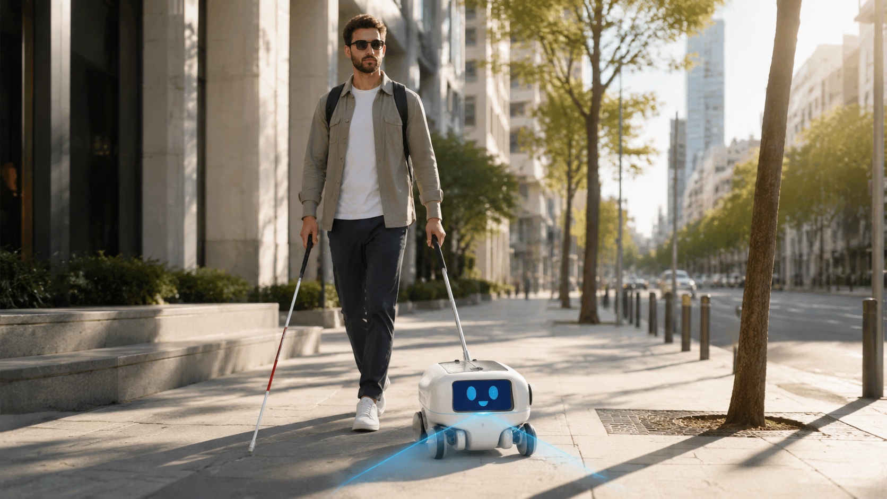
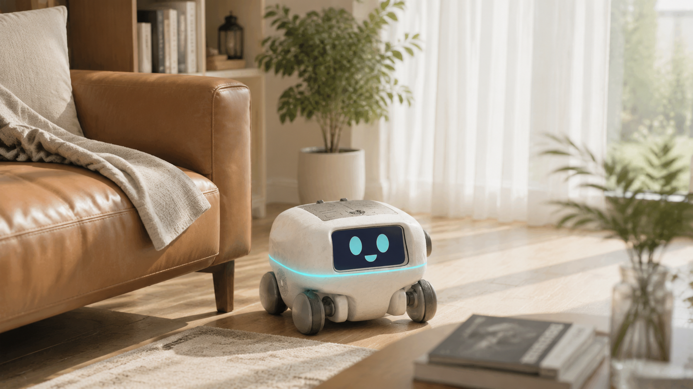
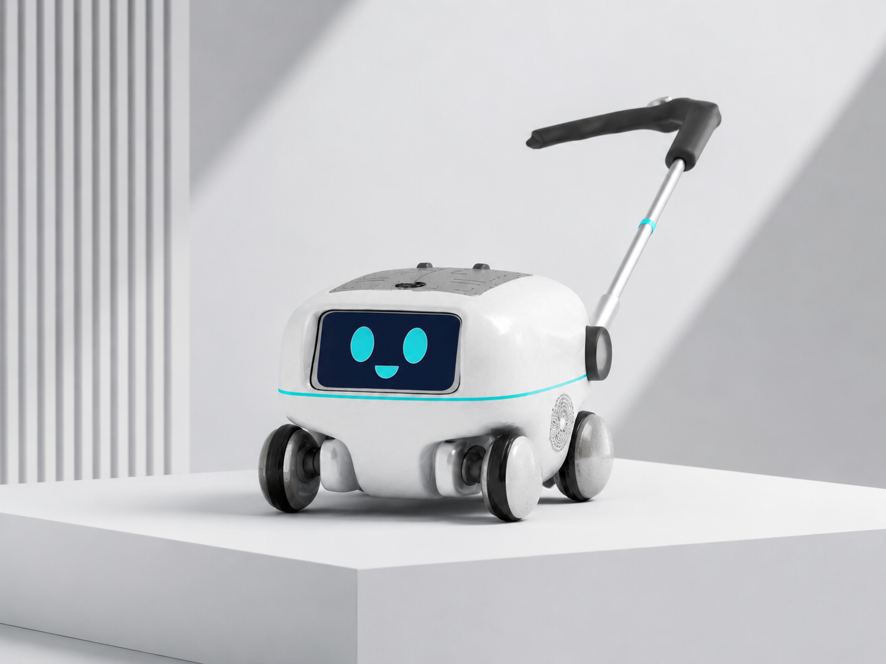
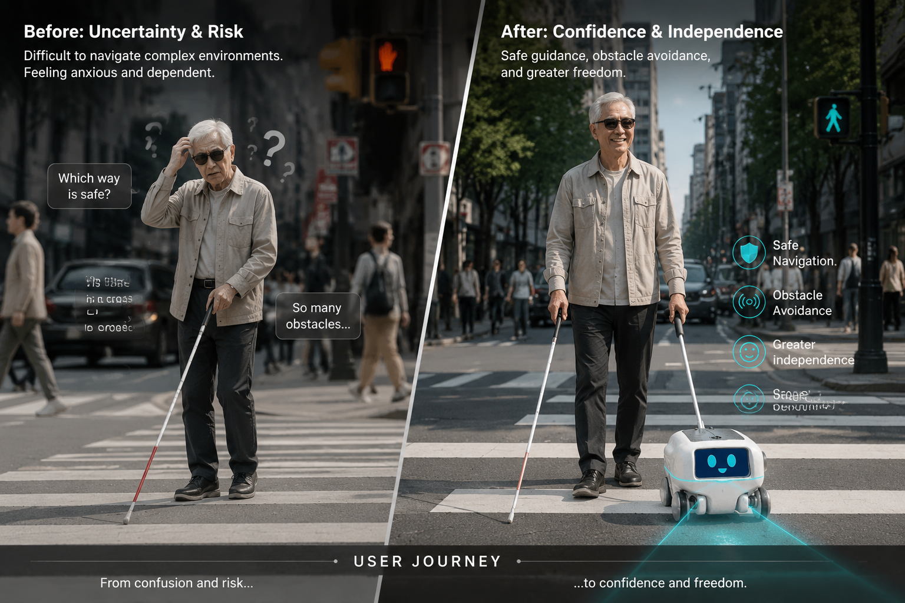
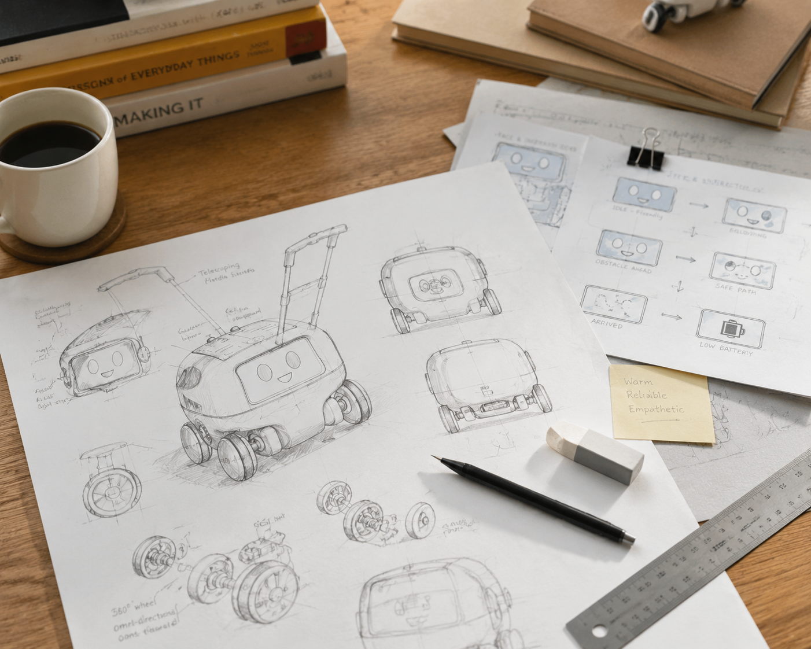
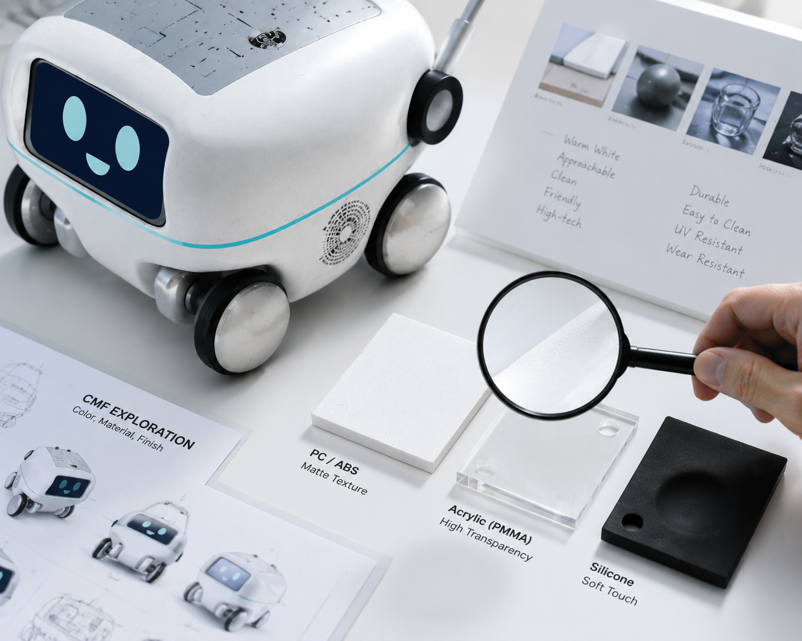
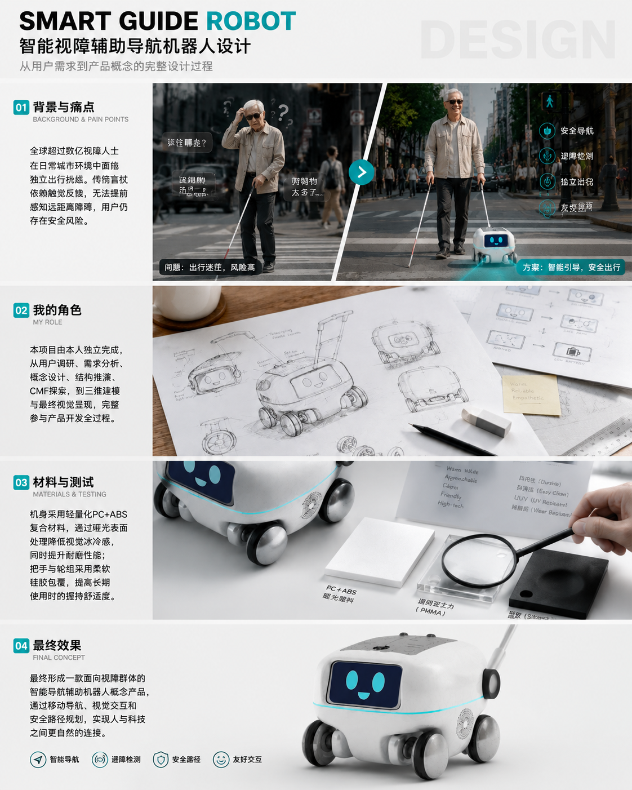
03 / Design boards
用户研究、功能系统与产品表达
三张展示板完整梳理设计背景、视障出行痛点、功能架构、交互方式与最终产品方案。


04 / Product development
结构、造型与多角度细节
从尺寸图、顶视图、侧视图到移动结构和导盲杆连接方式，完整呈现设备的产品开发过程。所有图片均按原始比例显示，不进行裁剪。
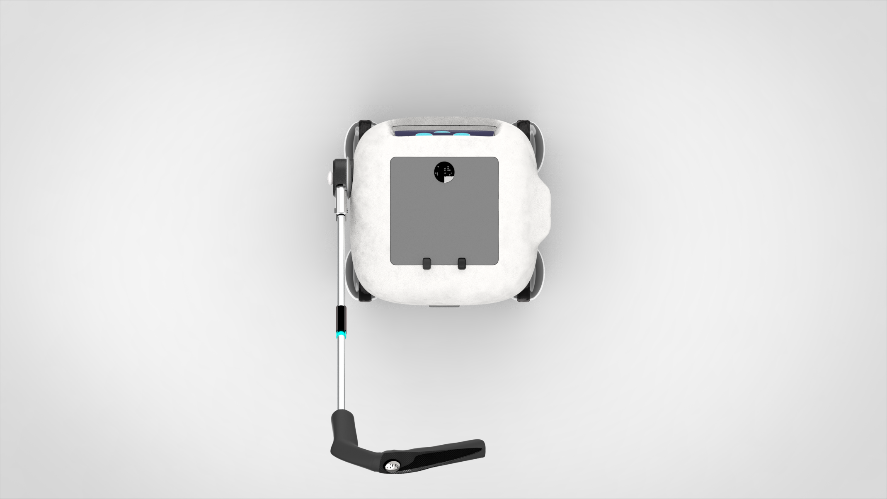
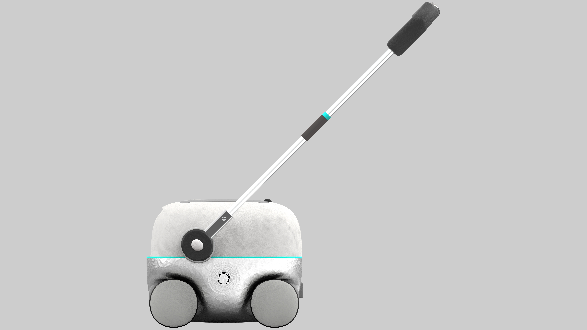

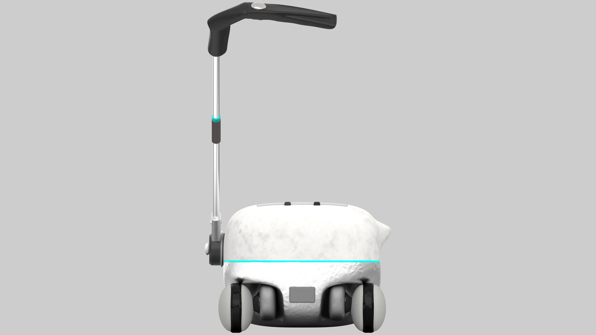
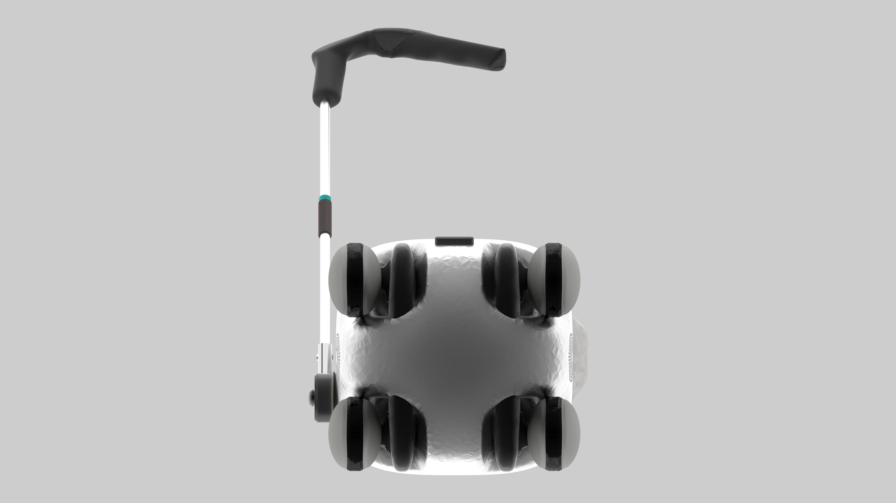
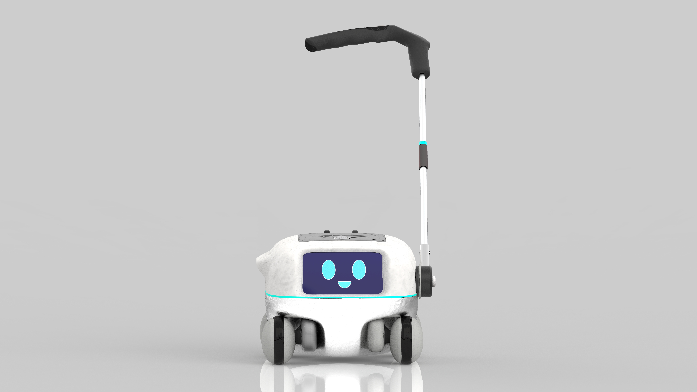

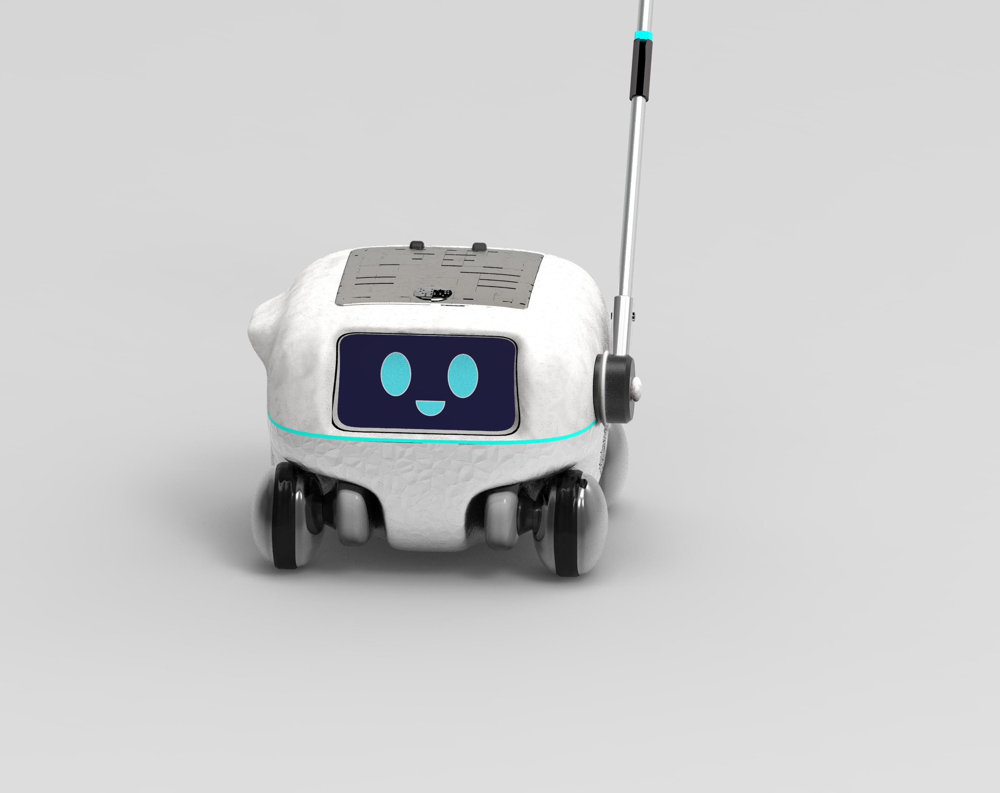